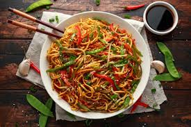

Cooking the noodle
Let's start cooking

Ingredients
- 200 g egg noodles
- 1 cup mixed vegetables(caarrots, bell paper,beans)
- 2 tbsp soy sauce
- 1 tbsp oyster sauce
- 1 tbsp vegetable oil
- 1 tsp sesame oil
- 1 clove garlic, minced to taste
- saly and pepper
Nutrition Information (per serving)
| Calories |
Protein |
Fat |
| 450 kcal |
20 g |
18 g |
Watch a Cooking Video
Back to my Bio Page